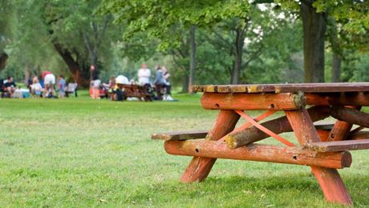

Lost Forest
The picnic spot is open for everyone , feel free to stop by
Picnic Park:
- Picnic park is open daily : 09h00-17h00
- Entrance fee is R40 per person. Children under 2 years old are free.
- Visitors are welcome to bring picnic blankets,camping chairs,tables and gazebos, as wooden benches are limited on a first-come-first-serve basis.
- Day visitors can picnic/braai in the picnic park under the trees and on the lawn.
WHERE WILL YOU FIND IT?
The picnic park is to the south of the main entrance.